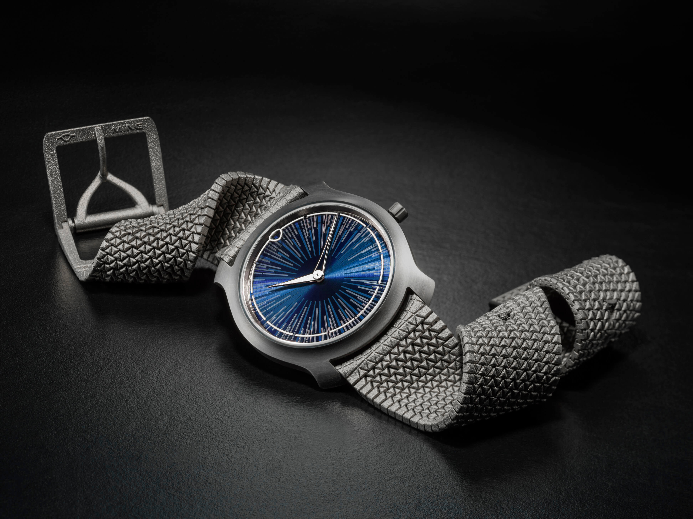
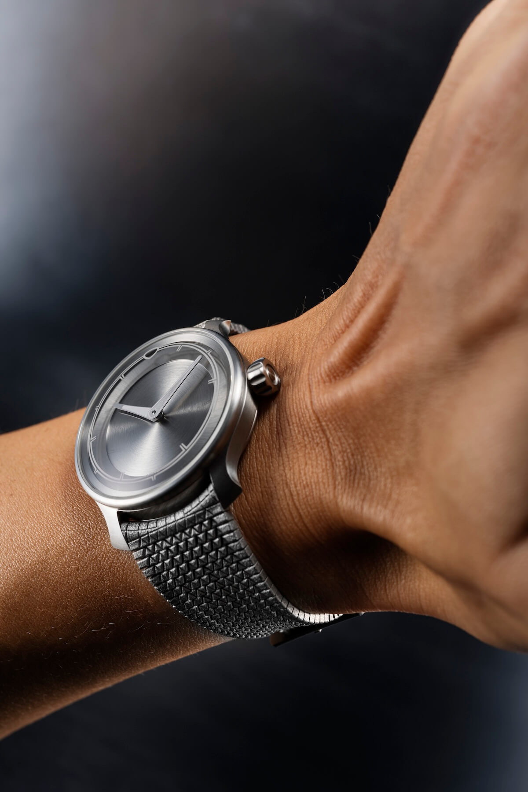
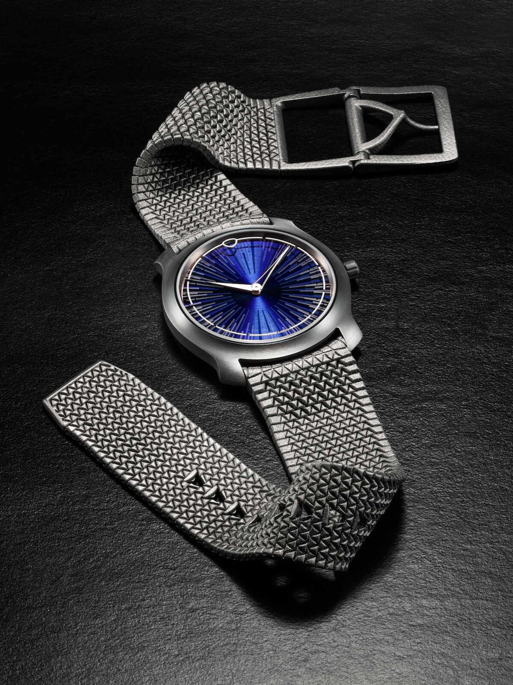
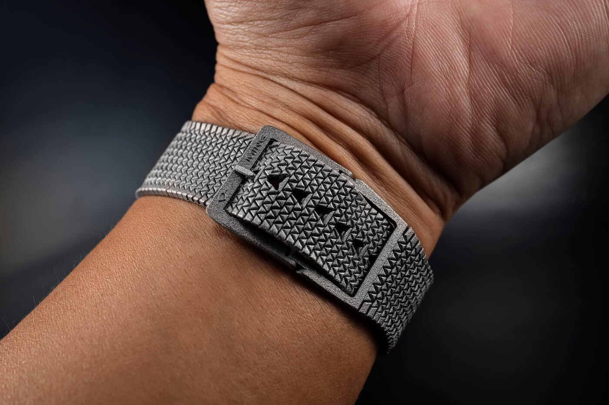
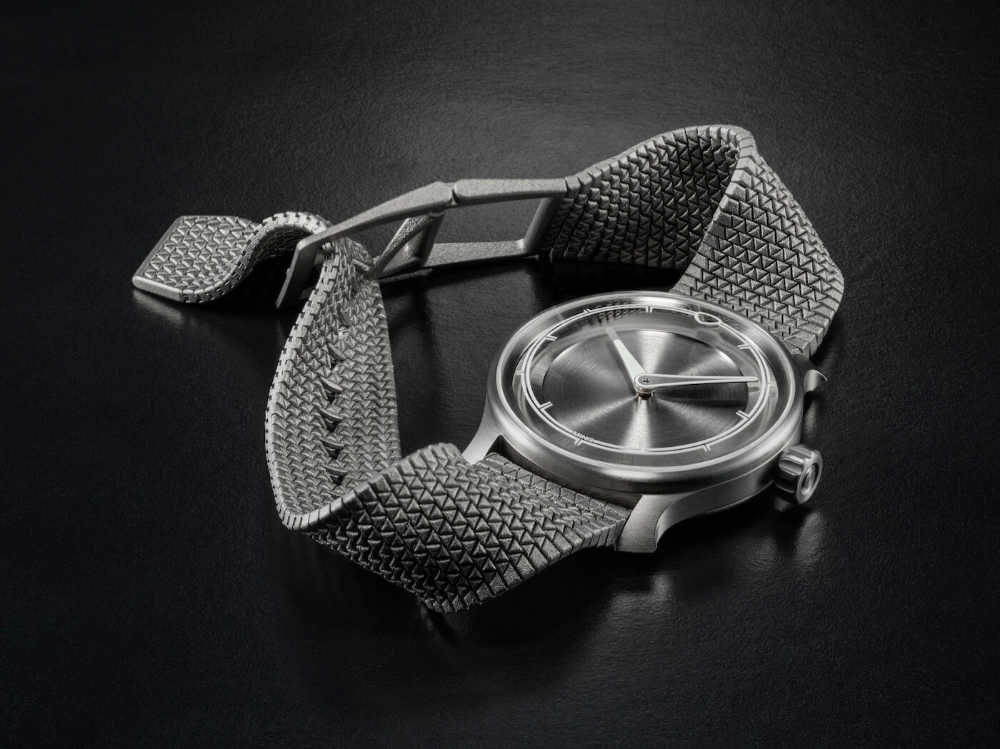

MING Releases Innovative 3D-Printed Titanium Polymesh Bracelet
Independent watch brand MING has announced the release of the Polymesh, a new, slick watch bracelet constructed from 3D-printed grade 5 titanium. The bracelet is a hybrid and it combines the supple, wrist-hugging characteristics of a fabric strap with the cool, tactile feel, and durability of a metal bracelet. It looks awesome!
 Nenad Pantelic • October 14, 2025
Nenad Pantelic • October 14, 2025

The underlying technology of the Polymesh is in advanced additive manufacturing, specifically a process called powder bed laser sintering. Unlike traditional subtractive manufacturing, which involves carving a final product from a solid block of material, additive manufacturing builds an object layer-by-layer from a digital model.
In this case, a high-power laser sinters, or fuses, fine titanium powder one layer at a time to create the intricate structure. This method enables a unique link topology (the specific geometric arrangement and interconnection of the parts) that provides more flexibility along the radial axis around the wrist than the lateral one, an effect that could not be achieved with conventional machining.
The design reportedly took one year to develop, undergoing seven complete redesigns to optimize the structure and function.
How Is A Bracelet Of This Complexity Constructed?
The manufacturing process presented significant technical hurdles. According to the company, the process requires maintaining tolerances as tight as 70 microns between individual parts to prevent the titanium powder beads from fusing incorrectly during sintering.
Additionally, handling finely powdered titanium requires a controlled, inert gas environment to mitigate its explosive properties. MINGMING collaborated with specialists Sisma S.p.A. in Italy and ProMotion SA in Switzerland to overcome these manufacturing challenges. Each bracelet is made after several hundred layers of sintering, a process that takes several hours per unit, followed by finishing to ensure smooth articulation.


MING Polymesh
From an engineering perspective, the Polymesh is a single-piece construction comprising 1,693 individual links and components. The entire structure, including an articulated tuck buckle and its hinges, is formed simultaneously during the printing process without the use of pins or screws. The only subsequent assembly required is the installation of quick-release springbars.
The final product is designed for all 20mm lug width MING watches. As mentoned before, the bracelet is constructed from grade 5 titanium. This specific alloy has very high strength-to-weight ratio and excellent corrosion resistance, and is typically used in aerospace and high-performance applications.


Here are the specs:
| Brand | MING |
| Material | Grade 5 titanium |
| Number of components | 1693 |
| Endlinks | Integrated curved-end links |
| Attathcmet system | Quick release springbars |
| Width | 20mm |
| Size | Fits 152mm/6.0" to 206mm/8.1" wrists |
| Buckle | Titanium; Integrated tuck buckle system |
| Price | CHF 1,500 excluding taxes |
With this release, we're seeing a breakthrough in the creation of high-end products, that use 3D printing to achieve unprecedented levels of complexity and accuracy. Kudos to MING!
Video Introduction
Wrap-Up (pun intended) 🤗
The MING Polymesh is priced at CHF 1,500, excluding taxes, and is available for purchase through the company's official website and its authorized retail partners. There was a part of my own collecting journey when I wore a stainless mesh bracelet on my Seiko field watch, and I loved the unique articulation of the mesh rows. While I eventually moved on from it, this announcement brings back that appreciation for innovative bracelet design.
I hope this new Polymesh is well-received by MING collectors, and congratulations to the brand for significant investment in research and development to bring such a complex concept to life.